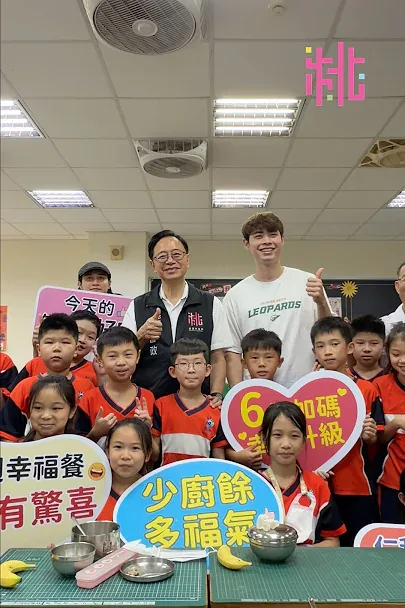
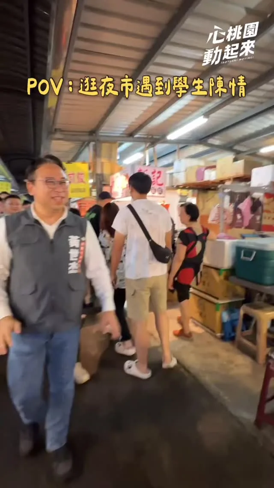
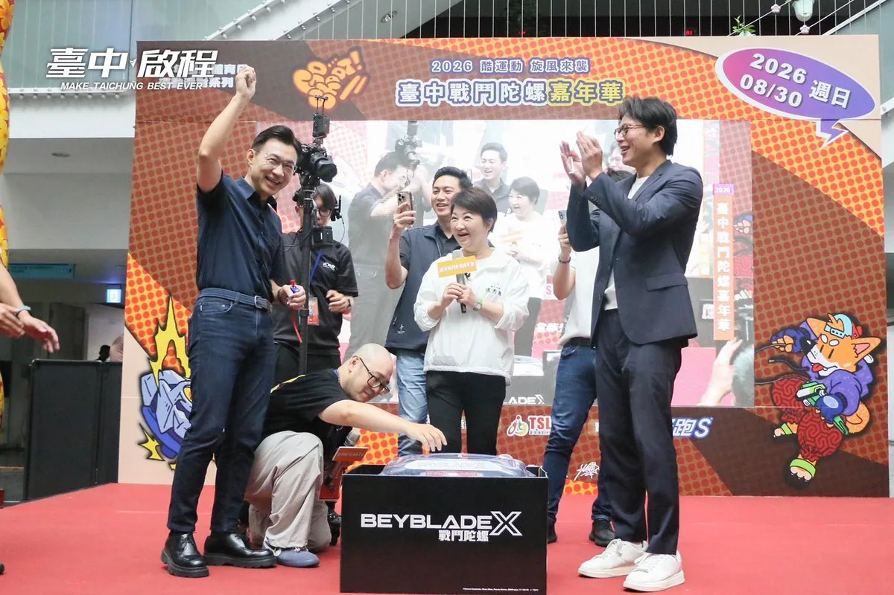
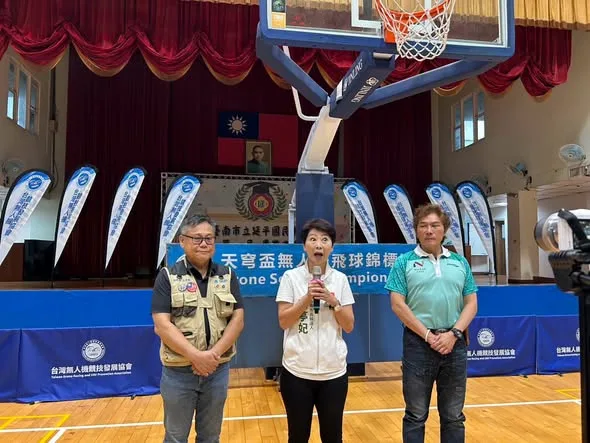
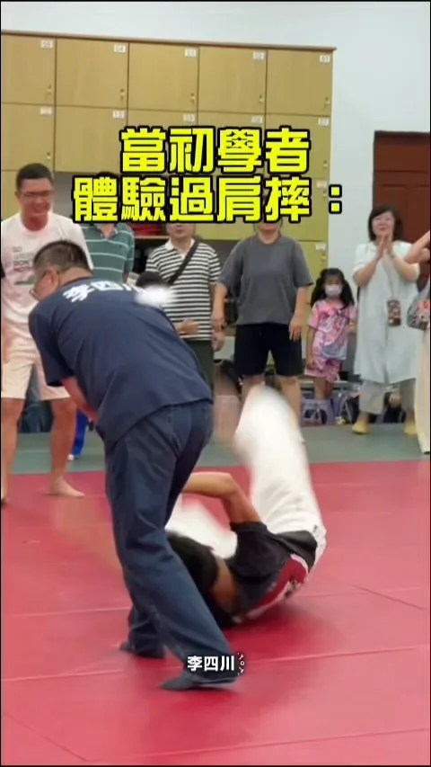
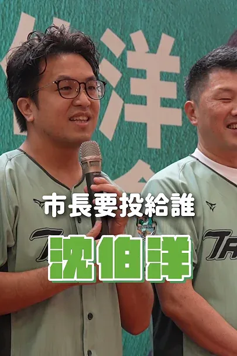
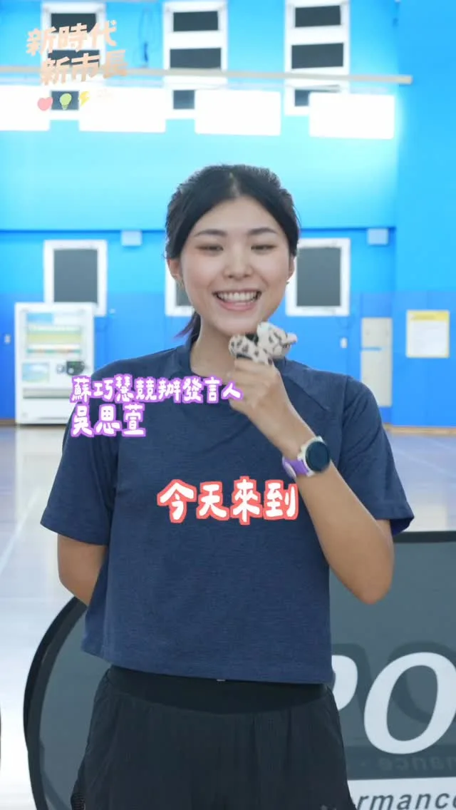
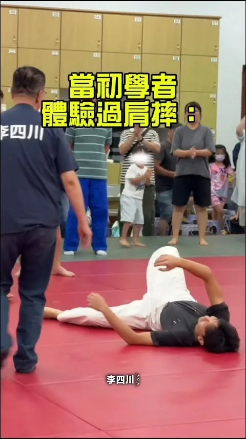

張善政taoyuansango

#開學日 孩子要健康成長，吃得好、愛運動都很重要。
Posts

#開學日 孩子要健康成長，吃得好、愛運動都很重要。
在夜市被一群學生突襲陳情‼️ 他們問我，「投給你的話，選手的游泳比賽獎金能不能再提高？」 我當場承諾，「不只獎金要加碼，還要改建桃園市立游泳池，打造符合比賽標準的場地！」 今天是開學日，給選手跟年輕人最好的支持，就是為桃園打造最好的未來✨ 黃世杰是追夢路上最挺你的夥伴，請把桃園交給我，我們一起改變！

0830受訪 #受訪 #市政辯論 #兒童保護 #選舉補助款 #台北智庫-台北研究院 #城市規劃 #運動驛站
Playing Pickleball with Shen Po-yang!

一起來打匹克球！ 我和 @pumashen 沈伯洋、@hunglutw 張宏陸、@fanyunig 范雲一起在鶯歌國民運動中心打匹克球！匹克球果然是適合全年齡的運動，我們在Allen教練的教導下立刻上手！ 我和沈伯洋也分別提出了各項運動政見，未來在新北市，我不只要 #確保各項運動場館及設備充足 ，我也要實施 #職場微型運動計畫 ，補助企業購入器材、開設課程，讓大家可以利用上班空檔運動。 同時，我也提出 #心理健康支持3加3方案 ，在現有衛福部的基礎上，再加碼三次免費心理諮商，讓大家身體、心理都健康！ 讓運動成為大家的日常，也要讓運動產業在新北繼續發展！


女力出擊，熱血開打！為每一位馳騁紅土的選手加油！

何欣純推海線翻新 大甲運動館、鐵路雙軌高架齊進 台中市長候選人、立法委員何欣純把握週末時 […] 〈 何欣純推海線翻新 大甲運動館、鐵路雙軌高架齊進 〉這篇文章最早發佈於《 何欣純官方網站｜2026 台中市長候選人 》。
@pumashen:明天早上一起去運動~ ⠀ 8/24（一） ⠀ 07:00 📍前港公園
近來台中若不是連日高溫，就是下大雨，大家都需要更多舒適的室內運動休憩環境。 未來我們會盤點閒置空間，積極建置室內運動場館，讓市民享有一個不受天候影響、隨時可以運動休憩的好所在。

@hammer__lee:說實在，這一天我是去當學生的。 小編幫我把特效開到 100%，我看完只想請他關掉。 特效可以加，實力加不了，只能靠練。 新北的孩子想練，我就讓他們有地方練。

@schuanglawyer:在夜市被一群學生突襲陳情‼️ 他們問我，「投給你的話，選手的游泳比賽獎金能不能再提高？」 我當場承諾，「不只獎金要加碼，還要改建桃園市立游泳池，打造符合比賽標準的場地！」 今天是開學日，給選手跟年輕人最好的支持，就是為桃園打造最好的未來✨ 黃世杰是追夢路上最挺你的夥伴，請把桃園交給我，我們一起改變！

陀螺準備好，臺中開戰！🔥 3、2、1，Go Shoot！ #2026臺中戰鬥陀螺嘉年華 今天熱血登場！ #從4歲到54歲 ，大小朋友齊聚一堂、同場較勁，整個會場戰鬥力滿點。 啟臣過去也曾和羅廷瑋、廖偉翔舉辦多場陀螺大賽，小羅更是我的陀螺師傅😆。謝謝 盧秀燕市長用心促成這場親子盛會，讓不同世代一起玩、一起拚，也一起留下快樂回憶。 還要謝謝今天的對手黃國昌承讓了！祝所有參賽選手旗開得勝，一起 #戰鬥啟程！💪 #臺中啟程 #打造旗艦城 #幸福臺中 #TaichungWay #親子時光


🚁 天穹盃無人機飛球錦標賽台南戰，精彩開打！ 今天來到北區延平國中體育館，看見各路好手操控無人機，在空中展開速度、技巧與策略的較量！ 科技結合運動，真的可以玩得又快、又刺激！ 為所有參賽好手加油，享受比賽、飛出精彩！ #天穹盃無人機飛球錦標賽 #台南 #北區 #科技運動 #陳亭妃
0828受訪 #受訪 #象山公園 #運動文化 #無菸城市 #普發二萬 #樹蔭公平
一起來打匹克球！ 我和 台北 沈伯洋、張宏陸、范雲 FAN, Yun 一起在鶯歌國民運動中心打匹克球！匹克球果然是適合全年齡的運動，我們在Allen教練的教導下立刻上手！ 我和沈伯洋也分別提出了各項運動政見，未來在新北市，我不只要 #確保各項運動場館及設備充足 ，我也要實施 #職場微型運動計畫 ，補助企業購入器材、開設課程，讓大家可以利用上班空檔運動。 同時，我也提出 #心理健康支持3加3方案 ，在現有衛福部的基礎上，再加碼三次免費心理諮商，讓大家身體、心理都健康！ 讓運動成為大家的日常，也要讓運動產業在新北繼續發展！

楠仔坑運動中心正式開幕！大家一起動起來🏊

🎈藝啟動一動 親子歡樂城🎈 ＃潭子站 8/29（六）早上9點，帶著孩子們一起出門放電吧！地點就在 #潭水亭觀音媽廟（潭子區復興路二段89號）！現場不只準備滑步車體驗、充氣城堡，還有市集和精彩舞台表演，讓大小朋友一起度過熱鬧又有趣的午後。 活動免費入場！也歡迎帶上野餐墊，和孩子一起輕鬆看表演。 🎁 提前報名還可領取限量精美小禮物，數量有限，記得搶先報名！ 報名網址： https://www.beclass.com/rid=30527d56a87c9b4dcfe4 #藝啟動一動 #親子歡樂城 #臺中啟程 #打造旗艦城

明天早上一起去運動~ ⠀ 8/24（一） ⠀ 07:00 📍前港公園
15萬人口才能蓋運動中心？何欣純這樣才可以區域均衡

說實在，這一天我是去當學生的。 小編幫我把特效開到 100%，我看完只想請他關掉。 特效可以加，實力加不了，只能靠練。 新北的孩子想練，我就讓他們有地方練。
在夜市被一群學生突襲陳情‼️ 他們問我，「投給你的話，選手的游泳比賽獎金能不能再提高？」 我當場承諾，「不只獎金要加碼，還要改建桃園市立游泳池，打造符合比賽標準的場地！」 今天是開學日，給選手跟年輕人最好的支持，就是為桃園打造最好的未來✨ 黃世杰是追夢路上最挺你的夥伴，請把桃園交給我，我們一起改變！
陀螺準備好，臺中開戰！🔥 3、2、1，Go Shoot！ #2026臺中戰鬥陀螺嘉年華 今天熱血登場！ #從4歲到54歲 ，大小朋友齊聚一堂、同場較勁，整個會場戰鬥力滿點。 啟臣過去也曾和羅廷瑋、廖偉翔舉辦多場陀螺大賽，小羅更是我的陀螺師傅😆。謝謝 盧秀燕市長用心促成這場親子盛會，讓不同世代一起玩、一起拚，也一起留下快樂回憶。 還要謝謝今天的對手黃國昌承讓了！祝所有參賽選手旗開得勝，一起 #戰鬥啟程！💪 #臺中啟程 #打造旗艦城 #幸福臺中 #TaichungWay #親子時光


Step up to the plate with Council Member Wang Min-sheng and hit a home run for Team Taipei!

@su.chiaohui:和 @pumashen 沈伯洋、@hunglutw 張宏陸、@fanyunig 范雲一起在鶯歌國民運動中心打匹克球！

「欸，沈伯洋會怎麼做？」 ⠀ 在青年座談上，我和大家聊聊為什麼決定參選，以及我心中的台北是什麼模樣。 ⠀ 我其實跟許多台北人一樣，每天找停車位、接送小孩、處理工作。生活裡那些看似微小的麻煩，我也都會遇到。所以，我思考市政的起點，不是一項又一項的口號，而是台北人每天怎麼生活。 ⠀ 為什麼要設置運動驛站？ 因為台北人不是不想運動，而是工作、通勤已經占去太多時間。我們要減少每一次運動前的阻力，讓大家更容易開始。 ⠀ 為什麼提出家長喘息服務？因為照顧孩子的同時，也要接住那些正在努力撐起一個家的大人 ⠀ 台北，除了要有AI、設計、文化與產業競爭力，也要讓人才住得起、孩子有人照顧、長輩可以安心生活，讓每個人在忙碌的日常裡，都感覺得到：這座城市有想到我。 ⠀ 台北市政可以參考各國城市的優點，但對於台北的未來想像，還是由每一位生活在這裡的人共同創造。 ⠀ 謝謝吳沛憶舉辦這場座談，也很感謝昨晚來到現場坐下來聽，及願意直接提問的每一位朋友。這就是我想入台北市政，從市民的生活出發，和大家一起，把台北的未來做出來。
市議員 劉耀仁在地服務24年，靠的是中正萬華鄉親一次又一次的信任。 ⠀ 耀仁從2002年擔任市議員至今，最清楚哪裡路不平、燈不亮、路口危險；也知道孩子需要更好的球場、老社區需要更新，早療與醫療人力更需要政府支持。 ⠀ 這些事看起來很細，卻直接影響市民每天的生活。 ⠀ 光是這一屆擔任議員期間，耀仁就推動220件工務建設，已有168件完工；也爭取改善青年公園棒球場、興建螢橋國中風雨球場，更為中興院區早療專業人員爭取加給。政治人物的價值，就是把承諾變成市民有感的改變。耀仁就是一位會監督、會爭取，而且做得出成果的民意代表。 ⠀ 耀仁長期推動老舊社區更新與校園體育建設，這些地方累積的經驗，未來也要由市府接手、擴大。因此，我提出「老屋延壽服務團」，主動協助老社區健檢、修繕；也規劃在每個行政區增設3至5處小型特色運動據點，搭配「運動小巴」載著器材與教練深入社區，讓老舊社區更新跟促進運動，變成成為全台北都能享有的政策。 ⠀ 中正萬華的改變，不是口號，而是走進每一條巷弄、每一個家庭。 ⠀ 請大家繼續支持劉耀仁，讓認真做事的力量延續；也請大家多介紹沈伯洋，讓更多人認識我們對台北的想法。 ⠀ 台北隊要全壘打，議員全壘打、市長勝選，一起找回光榮的台北！
明天早上一起去運動~ ⠀ 8/24（一） ⠀ 07:00 📍前港公園

從2380六星級到親子運動館 何欣純一次講給你聽

1958年創立的左營哈囉市場，早年因美軍駐紮左營，攤商常用一句「Hello」熱情招呼，久而久之有了「哈囉市場」這個稱呼。至今約有兩百家攤商，是許多左營人熟悉的老市場。 適逢中元普渡，很高興和林靜宏自治會長、攤商朋友相聚，祝福大家生意興隆、平安順利！ 「2026國標舞世界盃－台灣站高雄運動舞蹈公開賽」今年邁入第三屆，來自十多個國家與地區的選手、評審齊聚一堂。 謝謝大會邀請我參加開幕典禮，更感謝許哲睿理事長、蔡宛蓁秘書長持續將國際舞蹈賽事帶到高雄，祝福所有參賽選手盡情享受比賽！ 民防總隊交通義勇警察大隊林園中隊今天舉行授階，恭喜獲得授階的義交夥伴，也謝謝施榮宏中隊長和每一位隊員在第一線的無私奉獻。 高雄是個多元包容的城市，這些不同的面貌，都是我熟悉、也珍惜的風景。選戰倒數99天，謝謝大家一路的支持與鼓勵，一起守護這樣的日常，繼續為高雄打拚。 高雄小金剛許智傑李雅慧 高雄市議員黃文志 高雄市議員尹立 左營楠梓市議員參選人理想青年 張以理 李柏毅 拚搏未來 服務團隊 黃捷 服務團隊 曾俊傑 服務團隊

說實在，這一天我是去當學生的。 小編幫我把特效開到 100%，我看完只想請他關掉。 特效可以加，實力加不了，只能靠練。 新北的孩子想練，我就讓他們有地方練。